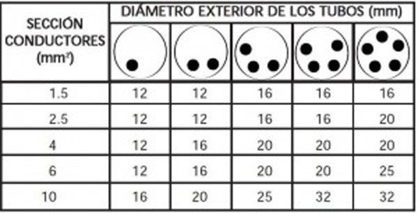
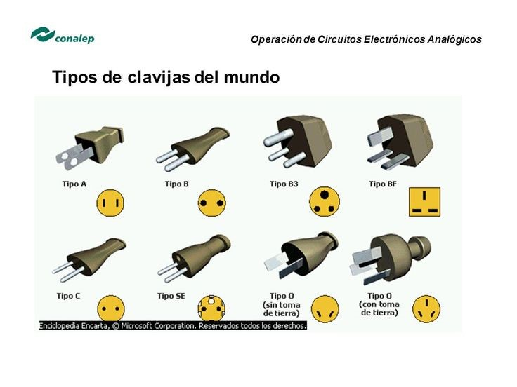
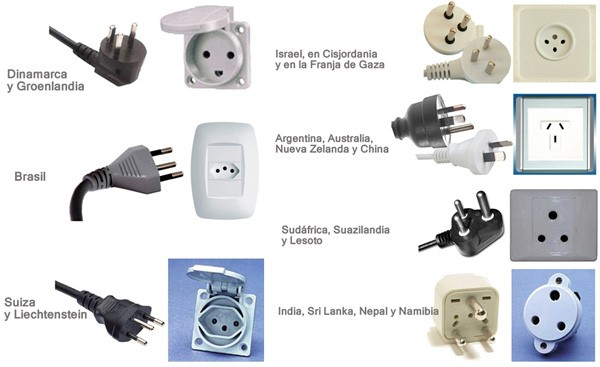

Empatizar
Utilizamos técnicas para empatizar, nos referenciamos e informamos todo sobre nuestro proyecto, buscando antecedentes del problema a resolver.
Benchmarking
Es un proceso en el cual se toma como referencia el proceso de trabajo de una empresa, producto, servicio comparándolo con los de tu empresa y hacer mejoras posteriormente este procedimiento se aplica en áreas que tienes pensado hacer mejoras implementar para tener una mayor competitividad. Aplicaremos el benchmarking en nuestro proyecto
Tipos de Benchmarking
Competitivo: Busca medir los productos de tus principales competidores en la gran mayoría de caso seste es el más complicado puesto que también tiene que colaborar la empresa que consideres que es tu competencia directa esta consume demasiados recursos es por ello que es la más costosa.
Interno: esta es la más económica ya que no se usan tantos recursos esta es aplicada en empresas de un tamaño considerable el cual se hace un benchmark en los departamentos existentes dentro de la empresa y valiéndose de los mismos resultados de alguna área, sirviendo como ejemplo a los demás departamentos o áreas de la compañía.
Funcional: Esta es una de las mejores ya que identifica as mejores prácticas de una empresa que sea excelente en el área que quieras mejorar en la cual las empresas no necesariamente son de competencia directa o mucho menos del mismo sector no habiendo problema con la confidencialidad y se proporciona la información necesaria
Nosotros usaremos un benchmarking competitivo
Etapas del benchmarking
ETAPA DE PLANIFICACIÓN
Planificar lo que se está dispuesto a investigar y responder las tres preguntas para poder realizar la planificación ¿Qué quiero medir? ¿a quién voy a medir? ¿Cómo vamos a hacerlo?
¿Qué debe de ser objeto de benchmarking? El objeto que vamos a someter a un benchmarking es el tomacorriente el cual tiene uso cotidiano en cualquier tipo de ambiente, pero por su falta de entradas hay ocasiones en las cuales ocasionamos accidentes
¿Contra qué o quién voy a hacer la comparación? La comparación de este producto con los productos actuales en el mercado es muy necesaria ya que veremos ventajas y desventajas de nuestro producto frente a productos similares y las diferencias que estos por defecto tienen al entrar en un cuadro comparativo
¿Cómo vamos a hacerlo? El proceso de cumplimiento de esta tarea puede ser mediante pruebas que se realizar pruebas a ambos tomacorrientes incluyendo el proyecto que estamos desarrollado y también sometiéndolo a las mismas pruebas de calidad del productos
ETAPA DE RECOPILACIÓN DE DATOS
Vamos a experimentar con los controles de calidad que todo producto pasa y siendo nuestro proyecto un tomacorriente se determinara la cantidad de calor que este resiste la corriente que soporta el número de entradas que esta posea y comparación con los otros productos y sus parámetros que por seguridad deben ser cumplidos para que este salga a la venta
ETAPA DE ANÁLISIS
Nuestro producto cumple con las demandas del número de cargas mínimas que son necesitadas en una casa que haga uso de unos tomacorrientes.
Análisis Positivo: Este tiene la misma cantidad de entradas que un tomacorriente estándar y soporta el mismo amperaje que estas además que tiene integrado un sistema de apagado automático.
Análisis Negativo: Los enchufes desarrollados en el proyecto al ser un producto nuevo no tendría una rápida comercialización frente a otros productos de similar magnitud o incluso mejores.
ETAPA DE ACCIÓN
Después de haber seleccionado e identificado adoptaremos las medidas, alguna implementación para mejorarla y que de alguna manera aporte valora a nuestros clientes
La mejora que le damos segun la entrevista que hicimos a nuestros clientes seria que nuestro tomacorriente tendria para colocar enchufes redondos y no solo planos, ya habiendo determinado de manera analítica los hallazgos positivos y negativos del tomacorriente procederemos a la etapa de implementación dentro de la casa de uno mismo y la verificación del tomacorriente a las situaciones que generalmente se presentan e cualquier otro tomacorriente
ETAPA DE SEGUIMIENTO Y MEJORA
Sabiendo las características de nuestro producto haremos una siguiente muestra de los productos y de cómo e que estos son de utilidad en uso en los ambientes de casa, oficinas y otros, hacer las posteriores mejoras que esta pueda llegar a tener para considerarse un producto final y su posterior comercio
Beneficios del benchmarking realizado
• Comparación de nuestro producto frente a otros productos en el mercado y ver sus claras diferencias siendo buenas o malas siendo tomadas en cuenta por nosotros para posteriores mejoras.
• Satisfacer las necesidades que nuestro tomacorriente podría dar en las casas donde se tiene una gran cantidad de cargas y las cargas que estas generan en épocas especificas del año.
• Lograr que nuestro producto llegue a ser competitivo y evaluar si este llegase a ser producido en grandes cantidades.
Fundamento Teórico
SECCIÓN Y FUNCIONALIDAD DEL CABLEADO
La sección mínima de conductores aconsejada para cableado doméstico, para una instalación de dos conductores y tierra con aislamiento de PVC bajo tubo empotrado es:
• Diámetro: 1,5 mm2 _ iluminación y automatización
• Diámetro: 2,5 mm2 _ tomas de uso en general, baño y cuarto de cocina
TIPOS DE CLAVIJAS
ADAPTADORES DE CORRIENTES UNIVERSALES
PAÍSES EN DONDE HAY TOMACORRIENTES Y SUS TIPOS DE ENTRADAS

Nosotros usaremos un benchmarking competitivo
Tecnicas para empatizar
Utilizamos entrevistas para porder empatizar con las personas
Precios de competidores